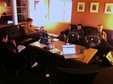

There's a recent story by KQED about hackerspaces, "community-operated physical places, where people can meet and work on their projects," generally tech or media related endeavors. Reading the story, I thought, "oh cool, we should do that!" And then I thought, "oh cool, we do that!" Although we are a business that supports our livelihoods by building client projects, we are also a community-oriented physical space, where people meet to work on their projects. The main difference is that the projects that people come to work on in our space are more often employment or work related projects, rather than purely labors of love, creativity and obsessive imagination. What if we set aside some solid time every month for a more pure dojo4 hackerspace and see what we build together (or individually). We've been talking about this for a while. Is it time to do it?